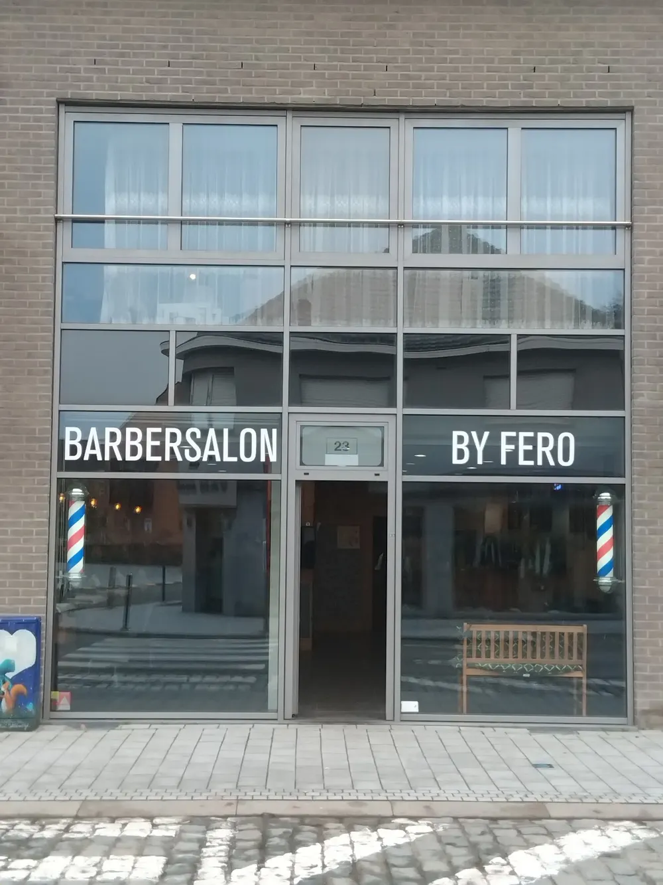
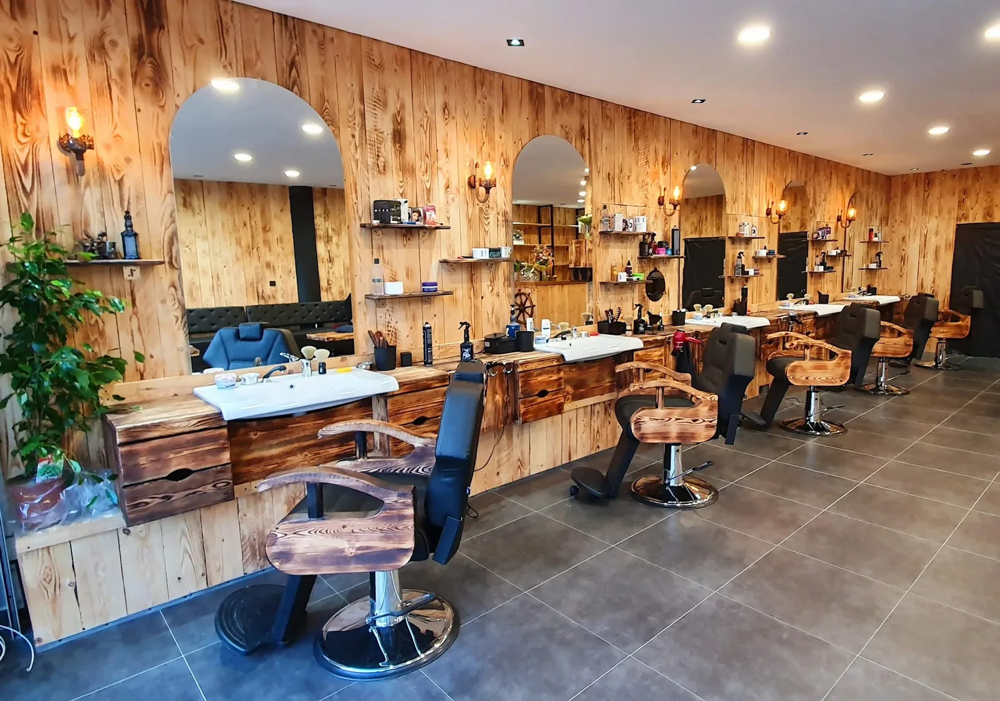
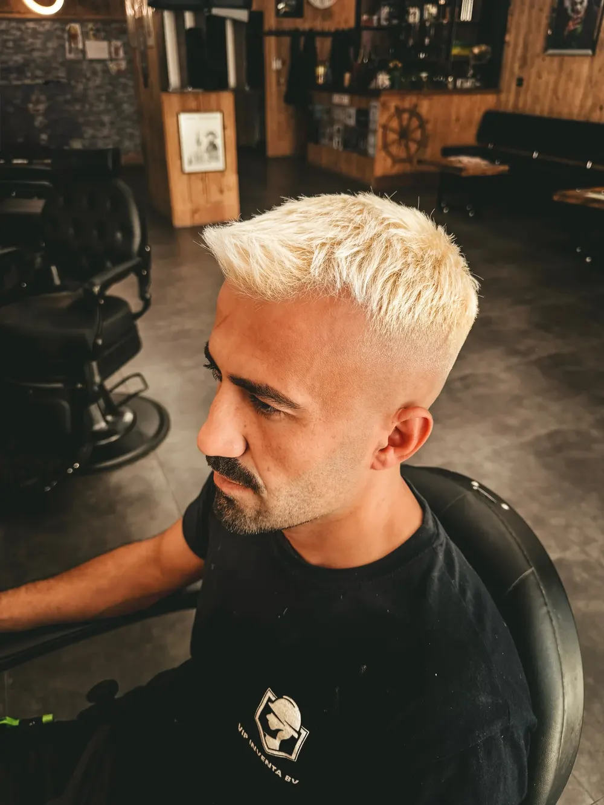
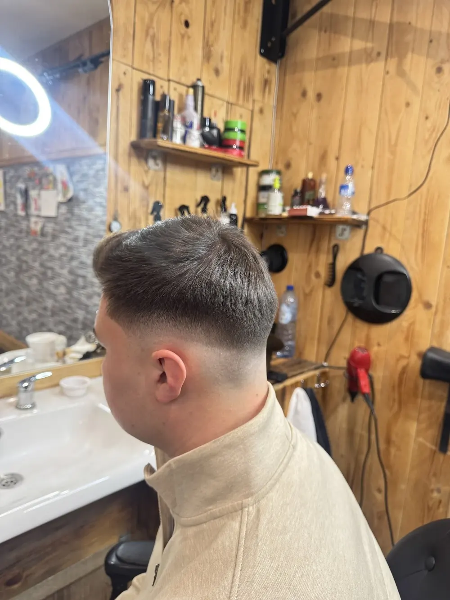
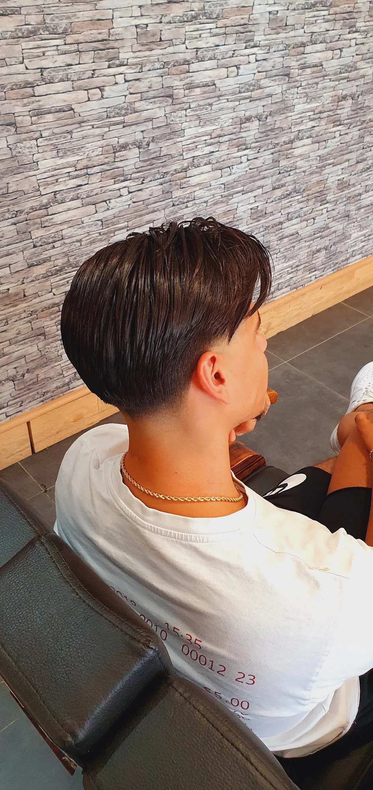
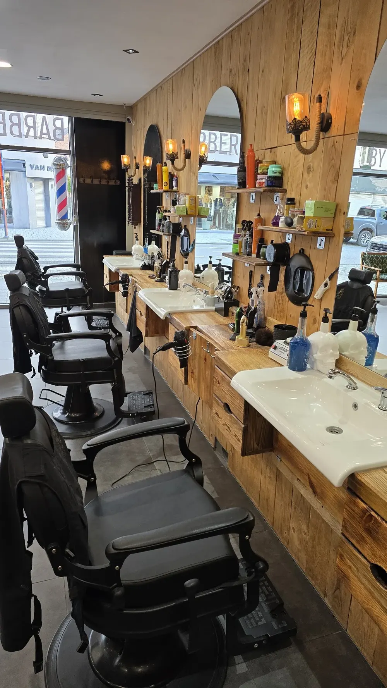

1Stap binnen
Schrieksebaan 23 in Tremelo. Je herkent ons aan de twee barberpalen naast de deur.

Barbersalon By Fero in Tremelo. Je komt binnen, neemt plaats en wij doen de rest. Een frisse snit, een verzorgde baard en meestal ook een goeie babbel.
Bij ons boek je niets. Je kiest zelf wanneer het past, en je stapt gewoon binnen op de Schrieksebaan. Zo simpel is het.

1Schrieksebaan 23 in Tremelo. Je herkent ons aan de twee barberpalen naast de deur.
 2
2Even wachten? Zet je in de zithoek. Er is altijd wel iemand die een verhaal heeft.
 3
3Zeg wat je wil, of laat ons meedenken. Van de eerste knip tot de laatste blik in de spiegel.
Handig als je tussen twee dingen door binnenspringt. Dit zijn de tijden die we meestal nodig hebben.

Fades, platinablond, lijnen tot op de millimeter. En af en toe een bliksem. Alles hieronder is gemaakt op de Schrieksebaan.







Op The Hair Project in Kortrijk Xpo stonden we met twee in de BarberBattle. Knippen op een podium, met een zaal vol publiek dat meekijkt. We gingen naar huis met de tweede plaats.
Die scherpte nemen we elke dag mee naar Tremelo. Ook als je gewoon voor een bijwerking komt.
"Supergoede service, een fijne sfeer en blijkbaar krijg je er niet alleen een goed kapsel, maar ook ineens een gratis therapiesessie bij. 😂 We hebben ondertussen even alle problemen van de samenleving opgelost… dus volgens mij kan de wereld er weer even tegen."
"Ik ben al vier jaar een trouwe klant en het blijft een geweldige ervaring. Het interieur is authentiek en geeft de salon een unieke charme die je nergens anders vindt."
"Alles perfect, medewerkers zijn super vriendelijk. Wij komen hier al 3 jaar en nooit problemen gehad. Echt een aanrader."
Geen afspraak nodig. Kom wanneer het jou past, van dinsdag tot zondag. Wie uit Keerbergen, Baal of Schriek komt, zit er zo.

Ik maakte deze demo voor jullie om te tonen wat er kan. Na een kort gesprek maak ik er iets veel persoonlijkers van, helemaal naar jullie wens.
Vrijblijvend. Ik kom langs of we bellen.
Op maat, op jullie eigen domein.
Geen voorschot. Jullie betalen pas als alles klaar is.
Hosting, domeinnaam en kleine wijzigingen, zoals nieuwe openingsuren.
Omdat een voorbeeld meer zegt dan een mail. Zo zien jullie meteen wat er kan, en het kost jullie niets.
Nee. Het gesprek is vrijblijvend. Vinden jullie het niks, dan is het daarmee gedaan.
Na ons gesprek staat jullie site binnen 10 tot 14 dagen online.
Zeker. Jullie domeinnaam kan gewoon blijven, de nieuwe site komt in de plaats van de oude.
Nee, dat doe ik op basis van ons gesprek. Eigen foto's zijn mooi meegenomen, maar niet nodig om te starten.